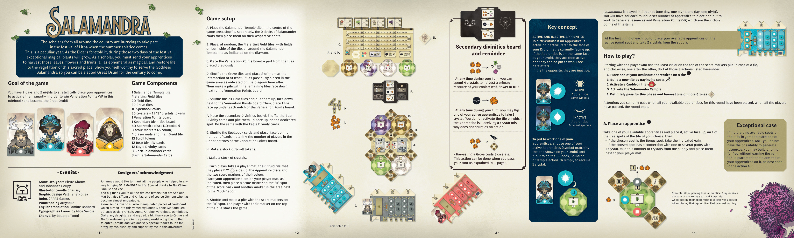
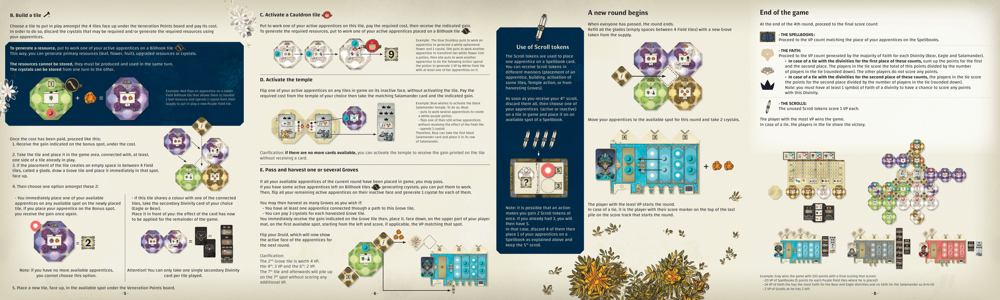

1游戏概览Overview
来自各地的学者们正赶往参加夏至的利塔节（Litha）。
这是特别的一年。正如长者们所预言的,在节日的两天里,这片神圣的土地上将生长出珍稀的魔法植物。作为学者,你需要派遣学徒去采集这些转瞬即逝又充满魔力的叶、花、果,让这片神圣之地的植被重焕生机。向萨曼德拉女神证明你的价值,你就能当选下一个百年的大德鲁伊。
目目标
你有 2 个白昼与 2 个暗夜,策略性地放置学徒、巧妙地唤醒他们,以赢得崇敬点数（Veneration Points,本规则书简称 VP）,成为大德鲁伊!
2组件清单Game Components
- 1 块萨曼德拉神殿地块
- 4 块起始田块
- 20 块田块
- 30 块小树林地块
- 10 张魔典卡牌
- 30 颗水晶 + 12 个「5」水晶标记
- 1 块崇敬点数版图
- 1 块次级神祇版图
- 40 枚学徒圆片(每色 10 枚)
- 8 个分数标记(每色 2 个)
- 4 块玩家板及其德鲁伊板块
- 13 个卷轴标记
- 12 张熊神祇卡牌
- 12 张鹰神祇卡牌
- 8 张黑蝾螈卡牌
- 8 张白蝾螈卡牌
3关键概念Key Concept
显化与蛰伏学徒
要区分学徒是「显化」还是「蛰伏」状态,请参考你的德鲁伊板块当前朝上的那一面:
学徒圆片上的符印与德鲁伊板块当前朝上一面的符印相同
→ 可以派遣其执行任务
学徒圆片上的符印与德鲁伊板块当前朝上一面的符印相反
→ 暂不可派遣
派遣学徒工作(两步)
要派遣一名学徒工作,分两步:
- 放置 — 按 §6 动作 A 把一名显化学徒放在地块的任意空位(放时仍为显化面,尚未派遣)。
- 派遣 — 将该学徒翻到蛰伏面,执行地块的效应(此时才真正「派遣」完成)。
翻到蛰伏面时可执行的效应:
- 镰刀(Billhook)地块 — 采集资源
- 坩埚(Cauldron)地块 — 转换或使用资源
- 神殿(Temple)地块 — 唤醒蝾螈神殿
- 单纯地获得 1 颗水晶(任意地块上翻 1 名显化学徒,不计为派遣)
- 花费 4 颗水晶 采集一种基础资源:叶、花或果。
- 将一名显化学徒翻转,获得 1 颗水晶(不唤醒其所在地块的效应)。
- 采集一个小树林需要 3 颗水晶(通常在跳过回合时执行,见 §6 动作 E)。
4游戏准备Game Setup
- 将萨曼德拉神殿地块置于游戏区中央。分别洗混两副蝾螈卡牌(黑、白),然后放在各自的指定位置。
- 随机抽取 4 块起始田块(双面有田),按图示环绕在萨曼德拉神殿地块四周放置。
- 将崇敬点数版图放置在之前放置的地块之外。
- 洗混小树林地块,在前述地块的相交空位(至少与 2 块田块相邻)放置 8 块小树林,如图示。剩余地块面朝下叠成一摞,放在崇敬点数版图旁。
- 洗混 20 块田块并面朝下叠成一摞,放在崇敬点数版图旁。然后在崇敬点数版图下方的每个凹槽里放置 1 块面朝上的田块。
- 放置次级神祇版图。洗混熊神祇卡牌,面朝上叠在专用位置;鹰神祇卡牌同理。
- 洗混魔典卡牌,根据玩家人数在崇敬点数版图上方的凹槽里放置对应数量的面朝上卡牌。
- 准备一份卷轴标记的库存。
- 准备一份水晶的库存。
- 每位玩家拿取 1 块玩家板、自己的德鲁伊板块(白昼面朝上)、本颜色的学徒圆片和 2 个分数标记。将学徒圆片按图示摆放在玩家板上,然后在分数轨的「0」格放置 1 个分数标记,在「100+」旁的区域放置另 1 个分数标记。
- 洗混并叠放在「0」格上的分数标记。位于最顶端的玩家作为起始玩家开始游戏。
5怎么玩How to Play
由分数最低的玩家开始(或并列时取分数标记堆顶的玩家),按顺时针方向依次执行下列 5 个行动中的 1 个:
在所选地块的任意空位放置 1 名显化学徒。
支付费用,放入 1 块新的面朝上的地块。
派遣学徒、支付费用,获得地块上的收益。
支付神殿费用,拿取 1 张对应的蝾螈卡牌 + 收益。
本轮永久跳过,采集任意数量可连接的小树林(详见 §6)。
每轮开始时
将你的可用学徒摆放在本轮专用的「本轮可用学徒」格,并从供应区拿取 2 颗水晶。
6动作详解Actions in Detail
从你的可用学徒中取出 1 枚,以显化面朝上放在你所选地块的任意空位,然后:
- 若你选的位置是「奖励」格(Bonus spot),则获得格上所示的收益;
- 若所选位置通过 1 颗水晶 符印与若干路径相连,则从供应区拿取相应数量的水晶,放在你的玩家板旁。
从崇敬点数版图下方 4 块面朝上的地块中,选择 1 块放入游戏区,并支付其费用。支付方式有两种:
- 弃除所需水晶(可跨回合储存)
- 将 1 名已放在镰刀地块上的显化学徒翻到蛰伏面(见 §3),产生基础资源(叶、花、果)、升级资源或水晶
- 基础资源:叶、花、果
- 升级资源
- 水晶
支付完费用后,按以下步骤进行:
- 获得奖励格(费用下方)所示的收益。
- 拿起该地块,在游戏区内与至少一块已放置地块的某一边相连地放下。
- 若地块放置后,在 4 块田块之间出现了新的空隙(称为「林间空地」),则抽取 1 块小树林地块并立即正面朝上放在该空位。
- 然后在以下 2 个选项中选择 1 个:
- 次级神祇卡:若该地块的颜色与所连接地块中任一地块的颜色相同,你可以从次级神祇卡牌中选择 1 张(鹰或熊),放在自己面前:该卡牌的效果将在本局余下时间内一直生效。
- 立即放置学徒:立即将 1 名可用学徒放在新地块的任意空位。若你把学徒放在奖励格,你会再获得 1 次该收益。
- 在崇敬点数版图下方的空位上放置 1 块新的、面朝上的地块。
将 1 名已放在该坩埚地块上的显化学徒翻到蛰伏面(见 §3),支付所需费用,然后获得格上所示的收益。
为产生所需资源,可同时将已放在镰刀地块上的显化学徒翻到蛰伏面。支付完费用后,按以下步骤进行:
- 获得奖励格(费用下方)所示的收益。
- 拿起该地块,在游戏区内与至少一块已放置地块的某一边相连地放下。
- 若地块放置后出现了新的林间空地,抽取 1 块小树林地块并立即正面朝上放在该空位。
- 在以下 2 个选项中选择 1 个:
- 次级神祇卡:若该地块颜色与所连接地块中任一地块的颜色相同,从次级神祇卡牌中选择 1 张(鹰或熊)放在自己面前。
- 立即放置学徒:立即将 1 名可用学徒放在新地块的任意空位。若你把学徒放在奖励格,你会再获得 1 次该收益。
将任意地块上 1 名显化学徒翻到蛰伏面(不唤醒该地块的效应)。从你选择的神殿支付所需费用,然后拿取对应的 1 张蝾螈卡牌 + 格上所示的收益。
- 派遣多名学徒制造 1 瓶白/紫药剂;
- 翻 1 名仍为「显化」状态的学徒(不获得该田块上的效果);
- 花费 1 颗水晶。
如果你本轮的所有可用学徒都已放置在游戏中,你可以选择跳过:
- 若你仍有显化学徒在能产生水晶的镰刀地块上,可翻他们的面产水晶。
- 然后,翻转所有剩余的显化学徒到蛰伏面,并为每名学徒获得 1 颗水晶。
- 然后,你可以按意愿采集任意数量的小树林,但需满足:
- 你至少有一名学徒通过路径与该小树林地块相连;
- 你可以为每块要采集的小树林支付 3 颗水晶。
你立即获得该小树林地块上印制的收益,然后将其面朝下放在玩家板上方的区域中——从最左侧第一个空位开始,按对应位置获得 VP(若有)。
第 2 块 = 4 VP | 第 4 块 = 3 VP | 第 6 块 = 2 VP | 第 7 块及之后堆在第 7 个位置,不再获得额外 VP。
翻转你的德鲁伊板块:它将显示下一轮学徒的显化面。
7新一轮开始A New Round Begins
当所有玩家都跳过时,本轮结束。
- 在所有 4 块田块围成的林间空地中,各放 1 块新的小树林(从供应中抽取)。
- 分数最低的玩家开始新一轮(若并列,则分数标记位于分数轨最上一摞顶端的玩家开始)。
- 将你的可用学徒移到本轮对应的位置,并拿取 2 颗水晶。
8游戏结束与计分End of the Game
在第 4 轮结束后,进行最终计分:
法魔典Spellbooks
根据你学徒在魔典上的位置获得对应 VP。
信信仰The Faith
根据每个神祇(熊、鹰、蝾螈)的信仰多数获得对应 VP。
- 若在神祇的第 1 名出现并列,则将第 1 名与第 2 名的点数相加,再除以并列玩家人数(向下取整)分给并列玩家。其他玩家不得分。
- 若在神祇的第 2 名出现并列,则将第 2 名的点数除以并列玩家人数(向下取整)分给并列玩家。
卷卷轴The Scrolls
未使用的卷轴标记每枚计 1 VP。
卷轴标记的使用
卷轴标记用于将 1 名学徒放到魔典卡牌上。你可以通过以下方式获得卷轴:
- 放置学徒
- 构筑地块
- 唤醒某些地块
- 执行神殿行动
- 采集小树林
当你收到第 4 张卷轴时:全部弃除,然后选择 1 名你的学徒(显化或蛰伏皆可),将其放在魔典的任意空位上。
- 魔典 20 VP(每块紫色田块上有他 1 名学徒,各得 5 分);
- 信仰 14 VP(他在熊、鹰两个神祇上拥有最多信仰,蝾螈上无信仰,故为 8 + 6 + 0);
- 卷轴 2 VP(剩余 2 枚未用)。
9特殊规则Special Rules
3 人局变体
起始地块的设置与 4 人局略有不同,具体请参考原书图示。整体流程与基础规则相同。
例外情况
若你已无学徒可放置在游戏区地块的空位上,且你也没有产生资源的可能,你可以免费构筑 1 块地块(不获得其放置的奖励),并按上述动作 A 的方式在新地块上放置 1 名学徒。
10制作人员与致谢Credits
- 游戏设计
- Pierre Giroux、 Johannes Goupy
- 插画
- Camille Chaussy
- 美术设计
- Valériane Holley
- 规则编写
- GRRRE Games
- 校对
- Arnyanka
- 英文翻译
- Camille Bonnard
- 字体
- Faune（Alice Savoie）、 Changa（Eduardo Tunni）
- 版本
- GG015 EN02
设计者致谢
附录 · 原书扫描
为便于对照原版排版与图标,附录保留 GRRRE Games 官方规则书原页(英文)。中文译文与原版若有出入,以英文原文为准。

